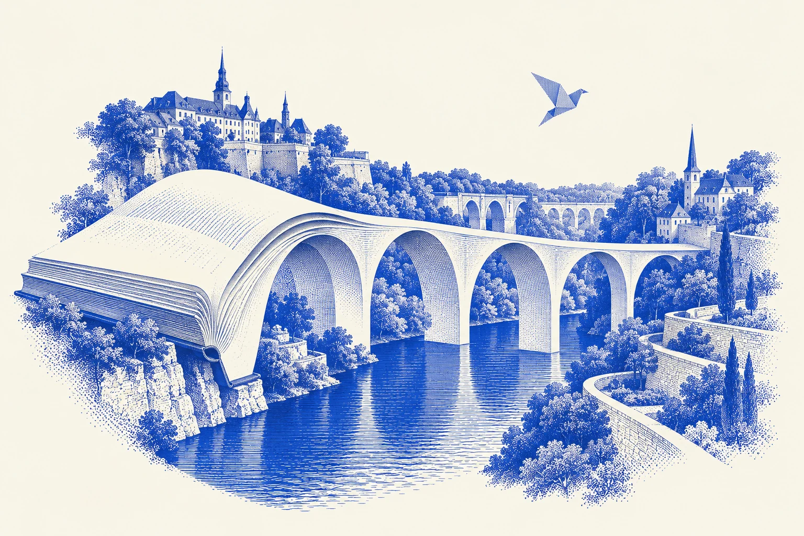
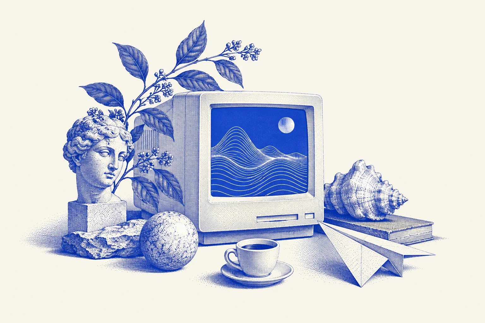

pieper.lu · Nicolas Pieper
À livre
ouvert.
Je construis des produits numériques.
Et les équipes qui leur donnent vie.

Les pieds sur terre.
La tête dans la suite.
Moi, c’est Nicolas. J’aime comprendre comment les choses fonctionnent. Puis imaginer comment elles pourraient mieux fonctionner.
Engineering Manager au Luxembourg, je fais avancer des plateformes de communication et des services numériques. Mon terrain de jeu : les systèmes complexes, les décisions d’architecture et les équipes qui grandissent.
J’ai commencé par le code. Je n’ai jamais vraiment quitté le clavier. Aujourd’hui, je construis aussi le cadre dans lequel d’autres peuvent faire du bon travail.
Le parcours en détailAu Luxembourg, avec curiosité.
Et si
on essayait ?
Une envie, un problème du quotidien, une obsession passagère. Parfois, ça devient un projet.
Surplasse
Rapprocher les restaurants de leurs clients. Du menu à la commande, en direct.
Parkventory
Une place de parking vide ? Autant qu’elle serve à un collègue.
Four à Nu
La pizza mérite qu’on s’y attarde. Des guides documentés pour choisir son matériel.
Mon Florian
Et si préparer un voyage donnait déjà envie de partir ?
Papers Empire
D’un petit atelier d’impression à une usine. Un jeu pour le plaisir de construire.
La curiosité
n’a pas de fiche de poste.

Internet m’a donné le goût de fabriquer. Les forums, les premiers sites, les projets lancés pour voir ce que ça donnerait.
Cette curiosité déborde encore du navigateur : la domotique, les voyages, les beaux objets. Et une pâte à pizza que je prends beaucoup trop au sérieux.
Sans oublier Pampy, mon Golden Retriever. Lui préfère les sorties aux mises en production.
L’histoire depuis le début{kind=link}
Voilà. Vous avez lu Pieper.
Et si on
se parlait ?
Une idée à confronter, un projet à raconter,
ou simplement un moien.